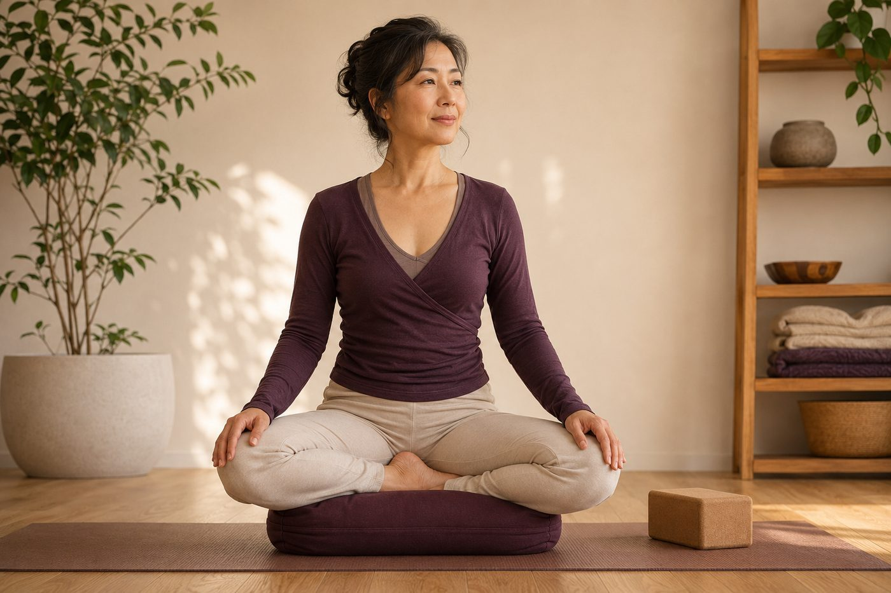

盤腿坐不住、腳會麻，問題出在髖還是姿勢？

盤腿坐下沒五分鐘，腳掌開始發麻、膝蓋外側懸在半空、腰越坐越垮，只好一直換邊、抖腳。很多人第一個念頭是「我腿太硬、不夠柔軟」——但真正卡住你的地方，多半不在腿，而在髖和骨盆。搞懂這件事，你會發現坐得舒服其實有捷徑。
盤腿卡住的，其實是「髖轉不開」
盤腿看起來是腿的動作，本質卻是髖關節的「外旋」加上屈曲。髖是一個球窩關節——球狀的股骨頭卡進骨盆的髖臼裡——天生就被設計來做大範圍旋轉；當你把小腿收進來盤起，那個「往外轉」的角度，本來應該由髖來提供。
問題是，久坐族的髖外旋肌群（像梨狀肌那一群）和大腿內側的內收肌，通常又緊又沒力，髖轉不到足夠的角度。這時身體很聰明，會去最近、最好借的關節「湊角度」——那就是膝蓋。可是膝蓋是鉸鏈關節，只擅長彎和伸，最怕被拿來「轉」。硬盤久了，膝蓋內側的韌帶、半月板被扭著，外側又懸空沒支撐，痠、卡、甚至刺痛就一起找上門。
盤腿坐不住，多半不是腿不夠軟，而是髖外旋不夠，膝蓋只好幫忙「轉」，替髖擔了不該擔的責任。
腳為什麼會「麻」？骨盆有沒有立起來是重點
先分清楚：「麻」和「痠」是兩回事。痠，是肌肉在硬撐；麻，通常是循環或神經被壓住了。要理解腳麻，得看你坐下去那一刻，骨盆是往前立、還是往後垮。
久坐讓髖前側變緊、腿後的膕旁肌（大腿後側肌群）也偏短，一坐上地板，這些後側張力會像韁繩一樣，把骨盆往後拉，變成「骨盆後傾」。骨盆一後傾，腰椎的自然前凸就不見了，背跟著拱起來，上半身重量不再落在該承重的坐骨上，而是往尾骨後方、往大腿根鼠蹊那一帶塌下去。麻，往往就是這樣壓出來的：
- 髖屈曲被壓得很深，鼠蹊處的血管、神經被夾住 → 腳開始發麻
- 盤腿時小腿外側、腳踝壓在地板或另一條腿上 → 壓到小腿外側神經（腓總神經行經處）→ 也會麻
- 圓背久坐讓呼吸變淺、循環變差 → 麻上加麻
所以腳麻常常不是「坐太久」這麼單純，而是「用一個把自己壓住的姿勢坐太久」。姿勢對了，能撐的時間會差很多。
解法不是更軟的腿，是「更高的坐墊」
這就是最多人沒想到的地方：你需要的往往不是更軟的腿，而是更高的坐墊。
拿一顆瑜伽磚、一條摺厚的毯子、或一個扎實的坐墊，把屁股（坐骨）墊高幾公分，事情會完全不一樣。坐骨一被墊高，骨盆就能自然往前轉一點，從後傾回到中立、甚至微微前傾；腰椎的曲線回來了，脊椎一節節往上疊好，不必再靠圓背硬撐；髖屈曲的角度也變淺，鼠蹊的壓迫跟著鬆開，腳自然比較不麻。一個小小的高度，換掉的是整條脊椎的排列。
幾個可以馬上調整的地方：
- 坐骨墊高：寧可墊高一點，讓骨盆能立起來，也比「屁股貼地硬坐」舒服太多。
- 膝蓋別懸空：盤起來膝蓋若離地很高，下面各塞一個抱枕或摺毯托住，髖外旋肌就不用一直吊著出力。
- 別強求對稱：兩腳前後錯開的散盤，比硬要交疊的雙盤友善很多，記得兩邊輪流坐。
- 想真的改善，回頭練髖：把時間花在讓髖能外旋、骨盆能立起來，而不是逼膝蓋讓步。
如果想從根本把髖打開、學會讓骨盆立起來，可以先看看開髖到底在開哪裡，就會更清楚久坐族真正該練的是什麼。
在鑫彥，我們常用壁繩來陪這一段。繩子給你一個可以靠、可以借力的支撐，讓你在不塌腰、不硬撐的狀態下，慢慢找到髖外旋和骨盆立起來的感覺——身體有了安全感，才練得下去、練得久。想先認識這個工具，可以看認識壁繩瑜伽。
坐不住、腳會麻，先看清楚是髖、是骨盆、還是姿勢
AI 體態檢測在教室現場做，透過影像看你的骨盆位置和髖的活動狀況，幫你分清楚問題卡在哪一段，該從哪裡開始練最有效。
預約首次 NT$199 AI 體態檢測今天可以先記住的一件事
坐不住、腳會麻，真的不是你不夠努力，也不是腿天生太硬。下次要坐地板前，先幫自己墊高坐骨、讓骨盆立起來——光是這一個動作，很多人的膝蓋痛和腳麻就先好了一大半。剩下的髖外旋和骨盆活動度，就交給時間慢慢練，一週比一週鬆一點就很好，千萬別為了「盤得漂亮」去硬折膝蓋。記得，你的目標是坐得久、坐得舒服，不是坐得好看。
本頁為體態與姿勢的一般衛教與練習分享，非醫療診斷或治療。若有疼痛、舊傷或特殊病史，請先諮詢合格醫療專業人員。